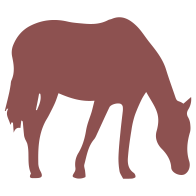

We have been a Federally Registered Charity since Feb. 2003 rescuing and placing over 180 horses most destined for slaughter and helping many more.

Please look through the pictures of the many horses who have come into our care and the pictures of the ones who presently reside here.
We receive no funding and depend on donations and fundraising to feed and care for the horses.